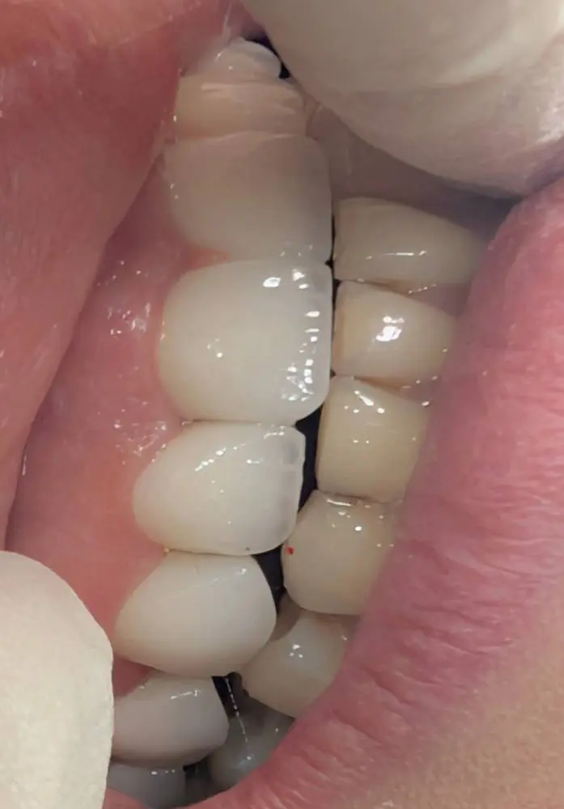

نسخه استخراجشده؛ ترجمه یا تأیید علمی انجام نشده است. وضعیت: captured
لمینیتهای قدامی بالا تحویل شدهاند. ناحیهی دیستال لترال بالا در معرض تماس مستقیم با کانین فک پایین است؛ تماسی که در حالت حداکثر اینترکاسپیشن وجود ندارد. چرا همین نقطه یکی از مستعدترین نقاط شکست سرامیک است؟

این تماس نه در حداکثر اینترکاسپیشن، بلکه در حرکات پروتروزیو و مسیرهای پیشگرایی (Anterior Guidance) اتفاق میافتد. این نوع تداخلها اغلب در بررسی استاتیک دیده نمیشوند و فقط در حرکت خود را نشان میدهند.
پیامد، وارد شدن نیرو به لبهی نازک سرامیک است که در بلندمدت یا حتی کوتاهمدت به چیپ شدن یا پریدگی (Chipping) میرسد.
بررسی اکلوژن در لمینیتهای قدامی به تماسهای استاتیک محدود نیست؛ هر واحد باید در مسیر حرکتی لتروزیو و پروتروزیو هم ارزیابی شود. دیستال لترال بالا اگر دیده نشود، خودش را با شکست نشان میدهد.
تنظیم اکلوژن بعد از سمنتیشن لامینیتهای سرامیکی انجام میشود، هم در روابط مرکزی و هم در حرکات خارج مرکزی.
اولویت، عدم تماس دندانهای خلفی و تماس یکنواخت انسیزورهاست. گاهی در لامینیتهای پرمولر پایین تداخل دیده میشود که اصلاحش از شیب مزیالی کاسپهای باکال پایین است.
پس از اصلاحات، سرامیک با مولتها و کیتهای مخصوص سرامیک پالیش میشود. برای کم کردن تنظیمات بعد از تحویل، آنالیز اول و قبل از شروع آمادهسازی اهمیت بسزایی دارد.